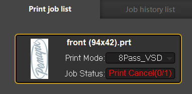
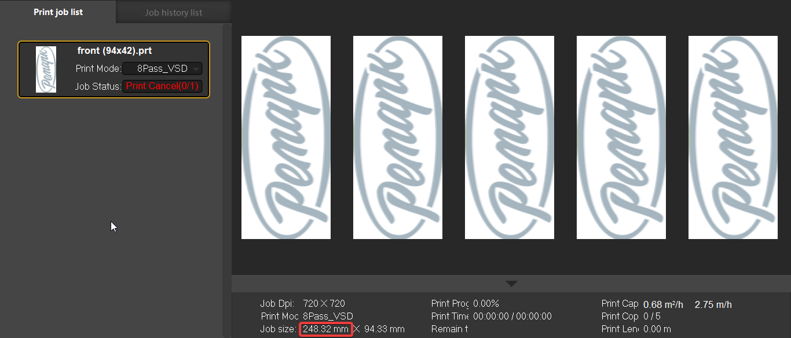
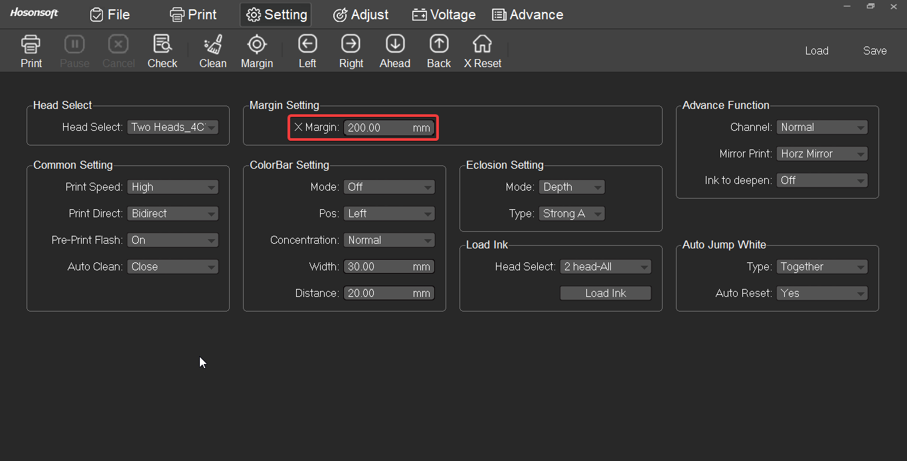
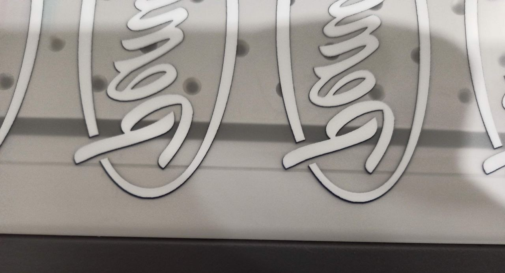

Некоторые приложения нельзя купить в РФ, скачивай взломки, это сэкономит время, нервы и деньги
🧰 Расходный материал
Необходимые
Чернила CMYK+W
ПЭТ плёнка
Термоклей
Дополнительные
Жидкость для чистки голов (растворитель чернил)
Сухие салфетки
Влажные салфетки
Одноразовые перчатки
Чистящие безворсовые палочки для обслуживания голов принтера
Запасные части
Демпфер
Трасса (Шланг для принтера)
Зажим трубок СНПЧ
Печатающая голова
Циркуляционный разветвитель чернил
Гибкий кабель-канал
Чернильный фильтр
Бак для чернил
Силиконовая смазка
Энкодерная лента
Болтики
💥 Ошибки
Желтеет принт
Снизить температуру печи
Не запекается клей
Повысить температуру печи
Не запекается клей по краям листа
Держать лист по центру печи, подобрать оптимальную температуру
Не печатается макет из иcтории напечатанных (Print Cancel)

Проверить значение в поле "margin", принт может не умещается на листе. Размер принта в данном примере 248.32 mm по ширине

Значение "margin" равно 200 mm

Вместе с отступом (248.32 + 200 = 448.32 mm) принт выходит за край плёнки, которая по ширине ровна 300 mm. Естественно принтер не даёт печатать вне плёнки
Смещение белой подложки вверх по оси Y

Первая строчка принтов в большинстве случаев идёт со смещением. Печатай >2-ух строчек принтов за раз или калибруй принтер каждый раз перед печатью любого принта
Дыры в принте при просвете изображения
Дать высыхнуть белым чернилам или повысить нагрев стола принтера
Полосы на принте
В реальности эти полосы очень заметны (изображения напечатаны на головах «i3200»)